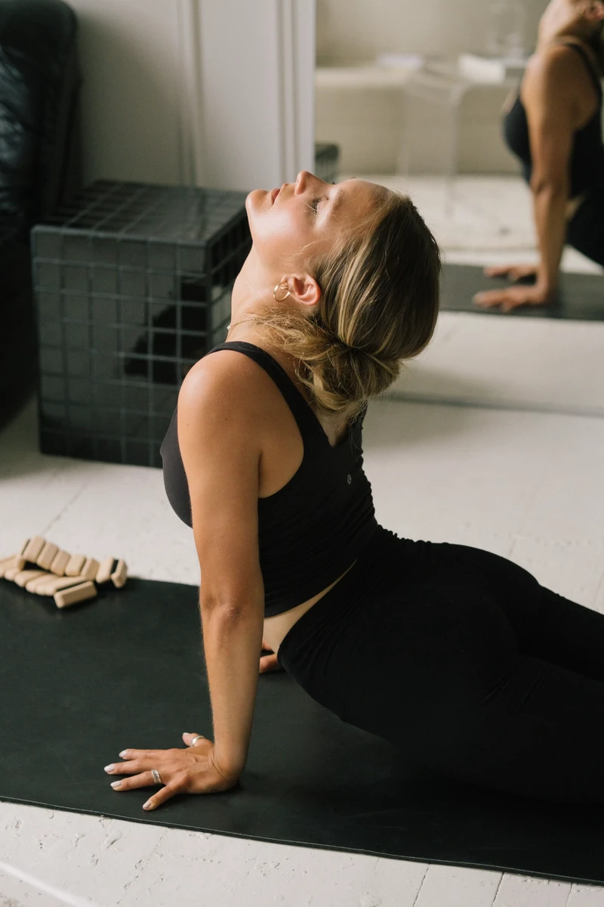

CORE

Alinhamento Profissional
& Bem-estar
Conhece o
CORE
O Core é um projeto que nasce com o objetivo de ajudar pessoas a viveram uma vida mais alinhada consigo mesmas, da vontade de criar um espaço para parar, olhar para dentro e voltar a encontrar direção. Acredito que passamos demasiado tempo a adaptar-nos ao que é esperado de nós, no trabalho, na vida e nas escolhas que fazemos, e muitas vezes, vamos perdendo contacto com aquilo que realmente precisamos e queremos, com quem realmente somos.
Aqui vais questionar o caminho que estás a seguir, compreender o que está por detrás da tua insatisfação, reconhecer aquilo que já não faz sentido e, sobretudo, perceber o que queres construir a partir daqui. Não é apenas um re-alinhar profissional, é um re-descobrir de quem és, e como podes viver uma vida mais feliz, autêntica e saudável.
Porque acredito que uma vida profissional com sentido não começa necessariamente por mudar de emprego, de profissão ou de carreira. Começa por perceber onde estás, quem és nesta fase da tua vida e o que precisa de estar alinhado para que te sintas verdadeiramente bem no caminho que estás a construir.
Serviços
Sessão Gratuita
Sessão de Clareza
CORE
Percurso CORE
Percurso de 3 sessões
Acompanhamento
CORE
Mensagemda fundadora
O Core é um projeto que nasce com o objetivo de ajudar pessoas a viveram uma vida mais alinhada consigo mesmas, da vontade de criar um espaço para parar, olhar para dentro e voltar a encontrar direção. Acredito que passamos demasiado tempo a adaptar-nos ao que é esperado de nós, no trabalho, na vida e nas escolhas que fazemos, e muitas vezes, vamos perdendo contacto com aquilo que realmente precisamos e queremos, com quem realmente somos.
Aqui vais questionar o caminho que estás a seguir, compreender o que está por detrás da tua insatisfação, reconhecer aquilo que já não faz sentido e, sobretudo, perceber o que queres construir a partir daqui. Não é apenas um re-alinhar profissional, é um re-descobrir de quem és, e como podes viver uma vida mais feliz, autêntica e saudável.